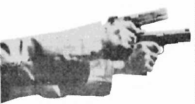
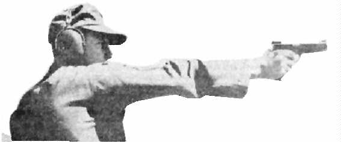

Timed and rapid fire stages can be stumbling blocks, especially if attempted in a haphazard manner. However, through the development of proper techniques and careful planning, you can improve your scores and become more consistent in your performance. A recent
development in the thinking of shooters is the concept of a sustained fire technique instead of
the more generally accepted idea of a separate method for each of the timed fire and rapid fire
stages. Many shooters that have attained national and world recognition find a distinct
problem in the build-up of tension caused by the time limitation of rapid fire. It has been found that the best method is to practice the technique developed for rapid fire by employing it during the timed fire phase as well. A further advantage is gained in that should an error pattern become apparent during timed fire, the shooter has ample opportunity to take corrective
action. He can then test the effectiveness of the correction before being forced to employ it
under the more strenuous conditions of the ten second time limitation of rapid fire.
A. EMPLOYMENT OF THE FUNDAMENTALS.
When a shooter makes his plan on the firing line to shoot timed and rapid fire, usually a
number of things have already taken place. Normally, his slow fire has already been fired and
the same fundamentals used there apply to the shooting of timed and rapid fire. The planning
for a string of shots is an extension of the basic factors involved in firing slow fire shots with the addition of recovery and rhythm.
1. Recovery is the return of the weapon to the original holding position in the center of the aiming area, accompanied by a natural alignment of the sights. If the shooter has a good solid stance, correct natural position, a firm grip, wrist stiff and elbow locked, the recovery is more natural and uniform. In the preliminary check out, if the weapon recovers to the right or to the left of the target center, it may be corrected by simply moving the rear foot in the direction of the error. If the sight alignment deviates, a compensating shift in grip must be made. Recovery must be accomplished as quickly as possible to allow more time for precise alignment of the sights and applying positive trigger pressure. The instant that the weapon was fired, the shooter must immediately resume the sequence of applying fundamentals for the next shot. A distinct rhythm will develop that enables him to deliver his string on the target under control and within the time allowed.

Figure 6-1. The Stance, Position, and Grip Must Be Firm Enough to
Absorb the Shock of the Recoil without the Wrist or Elbow Bending.

Figure 6-2. And Correct Enough So That Your Recovery Will Return the Weapon to Your
Aiming Area Quickly and Precisely With a Center Hold and a Natural Alignment of Sights.
2. Developing a good rhythm is very difficult but is absolutely necessary for good,
consistent time and rapid fire. By using a uniform technique, executing a planned sequence of
actions correctly and applying careful timing for each shot, we achieve good rhythm. A regular
cadence indicates smooth employment of the fundamentals provided the five-shot group is
centered and tightly clustered. It is particularly true during rapid fire that you do not have time to correct minor errors in hold. Any attempt to correct minor errors in hold may result in loss of rhythm. This attempted correction cause a hesitation or pause in the sequence of firing a shot while the correction is being made and results in a speed-up of trigger pressure for the remaining shots of the string. The lack of rhythm causes more bad rapid fire strings than any other factor. The first shot must be fired within one second after the target turns in rapid fire. A common error is to try to attain a perfect sight picture in an effort to make the first shot an X thereby losing valuable time in getting the string started. When this happens, usually the shooter becomes worried about the time, loses his concentration, speeds up his deliver rate for the remaining shots of the string and as a result has poor rhythm and a bad string. Another common error is to shoot the first four rounds with good rhythm then knowing there is a lot of time left, hesitate and try to set up a perfect sight picture so as to shoot an X on the last shot. Usually this last shot will be bad because the shooter does not apply trigger pressure properly. He invariably becomes worried about the time, loses his concentration and forces the shot to fire. In doing so he disturbs the sight alignment by either jerking the trigger or heeling the shot. In timed and rapid fire, a rhythm or cadence of firing must be acquired. This rhythm is needed for coordination and also for assuring the shooter, in a subconscious manner, that an equal amount of time is being allotted for each shot, and that he is abreast of the time schedule. Any mechanical operation has a certain rhythm. Timed and rapid fire is definitely a mechanical operation.
B. TECHNIQUE OF SUSTAINED FIRE.
The shooter must employ a technique tailored to give him the ability to control the
employment of the fundamentals under all conditions of competitive stress. The shooter must
consider the following known factors which have a bearing on the control of a five-shot string of timed or rapid fire.
1. Find your aiming area on the edge of the target frame. Look directly at the faced
target with your head in shooting position. Determine precisely where your aiming area is going to be when the target turns away. Relate this area to a spot on the edge of the frame that will be nearest you when the targets are edged. The time limitation precludes the luxury of looking at the target as it turns toward you so you can adjust your hold before applying positive trigger pressure for the first shot.
2. Stiffen your shooting arm as it extends the weapon toward the target and settles into the aiming area. Remember the degree of muscle tension required to give you solid arm control and a minimum arc of movement.
3. You should look at the aiming area and relate it to a spot on the edge of the target frame as you settle into a minimum arc of movement. Then shift the point of focus back to the rear sight before making a final point of focus on the front sight. This system is used to make absolutely sure the eyes are not focused somewhere between the front sight and the target.
4. The shooter must never forget that once he attains final focus on the front sight
he never again allows a focus shift until all five shots of the string have been fired. To look at the target at any time during the string is inviting disaster. Trust your stance, position and grip to give your precise recovery and to maintain a minimum arc of movement within your aiming area.
5. In rapid fire, the first shot should break soon after the target turns. It is not
necessary to try to get the first shot to break while the target is turning but it should break within one second. It is advisable to use the first motion of the target as the signal to apply positive, steadily increasing pressure on the trigger. The target's turning may sometimes produce a feeling of surprise and is accompanied by a momentary hesitation. This can cause a break in the shooter's composure and the firing of the first shot is delayed. By assuming a more determined attitude and stimulating your competitive aggressiveness you can overcome this problem. We suggest this approach: "When that target moves I am going to punch the 10 ring full of holes." You will be surprised at the effect this action has of eliminating any remaining doubts and at the resulting surge of confidence that it incurs.
6. During recovery, reestablish sight alignment without a focus shift. This action is
important because a focus shift during recovery will delay the reestablishment of sight alignment. Approximately one-half second is needed between shots for this ill-advised operation and could total two full seconds of lost time. Successful rapid fire requires the use of ten full seconds for proper coordination and full control.
7. If you allow your eyes to follow the pistol during recoil, you may inadvertently
move your head out of its original position. Any head movement during firing will disrupt the
relationship between the aiming eye and the front and rear sight alignment. Correction will require a wrist movement which only artificially corrects the error. Upon recovery from recoil of the succeeding shot, the same error is once again apparent and likewise needs correction.
8. Reaffirm your determination to concentrate upon sight alignment the instant positive trigger pressure is resumed. Maintain your concentration on sight alignment until the pistol fires again.
9. After the pistol fires it will be moved out of the normal hold area by the recoil of
firing, and it must be recovered instantly to the position it occupied prior to the dislocating effects of recoil. Recovery must be natural, uniform and quick.
10. You must immediately reestablish a positive, steadily increasing pressure upon the trigger. This should occur shortly before recovery is complete and the minimum arc of movement reestablished. The increasing pressure should neither be stopped nor varied in rate until the weapon has again been discharged. As soon as the positive, constantly increasing trigger pressure has been reapplied, shift your attention from thoughts of trigger control to the problem of sight alignment, just as you did on the first shot of the string.
11. The sights will be in near perfect alignment at the end of recovery, if the grip,
control and head position are maintained. However, this ideal situation occurs only intermittently.
12. Remind yourself that this technique, repeated for each shot, insures that continuity is established from one shot to the next. Assure yourself that you can deliver a successful string on the target with an absolute minimum of wasted thought and time by following this system.
C. COMMON DEFICIENCIES IN CONTROL: A number of deficiencies peculiar to timed
and rapid fire are:
1. Follow through, applies to slow, timed and rapid fire and should not be confused
with recovery. Follow through is the attempt by the shooter to keep everything exactly as it was set up until after the round is on its way to the target. Lack of follow through is a breakdown of one or more of the factors set up by the shooter to control a good shot. For example, lack of follow through might be caused by a speed up of trigger pressure resulting in anticipation of recoil and a heeled shot at one o'clock.
2. Recovery must be made quickly to allow time for aligning sights and positive trigger pressure. Recovering too slowly takes up excess time, alters the shooter's rhythm, and when he realizes that he has very little time left causes him to speed up his delivery rate. Each shot of a five shot string must be fired individually and uniformly, each one treated as a single shot. The shooter must see five distinct sight alignments.
3. Grip: An incorrect grip will cause misalignment of the sights on recovery after
each round is fired. This is corrected by carefully shifting the grip before the next string. Any tilting or turning movement of the head from its normal level position will cause the weapon to appear to recover either to the right or left of the bull's eye. Both of these errors may cause a delay in firing on the shooter's part in an effort to correct them, or break his concentration on sight alignment, losing valuable time and causing a loss of rhythm. All these factors add up to a poor string of five shots. Check out and dry fire the position and grip during the three minute preparation period just prior to the range officer's command "LOAD".
4. Calling The Shot Group: Many shooters fail to remember each shot on the basis of five individual sight alignments and cannot call the shot group accurately. If the shot group call is made and the call and the group are not together, it is necessary to determine the case and apply positive correction. The weapon probably is not zeroed, the position was bad or the grip incorrect. If the shooter is sure of the zero of his weapon, then dry fire the position and grip before firing the next five shot string.
5. Rhythm is absolutely essential. A common error in sustained fire is trying to make the first shot an X and thereby losing valuable time in getting the string started. When this happens, the shooter usually has poor rhythm and a bad string. When a determined shooter
causes the first shot to be fired on time, this same determination brings about a continuous
application of the fundamentals that assures a rate of fire that will complete the string on time.
6. In shooting rapid fire the shooter does not have time to correct minor errors in
hold. Trigger pressure is applied on the basis of sight alignment and not sight picture. The
shooter should make every effort to keep his arc of movement at a minimum, continue positive
trigger pressure, maintaining sight alignment, and shoot with a definite rhythm.
7. Lack of A System: When a shooter has a system to follow it relieves his mind so that he can concentrate on performance. Care should be taken during the early stages of instructional practice to comply with each of the items on the worksheets. As the shooter
becomes more capable, only the key items of preparation, shot sequence, shot analysis and
positive correction are relevant. Methodical repetition of these essential steps will instill in the shooter good shooting habits that will enable him to repeat a good shooting performance.
Further, the rapid fire worksheet will help the shooter form the habit of not overlooking any factor that will help his shooting.
8. Complete and instantaneous shot analysis is a mandatory prerequisite for any
improvement in your performance or scores. A mental impression of each sight alignment should
come at the instant the shot breaks. Corrective measures to prevent the recurrence of a poor
performance must be immediately applied. Much has been written about why we shoot poorly;
however, be reminded that it is just as advantageous to analyze why you are shooting well on a
particular day. It is more helpful to know the right way to perform than to have your mind cluttered with a multitude of "don'ts ". Coaches in particular should concentrate on and emphasize the positive factors.
9. Overeating during the shooting day has lowered may aggregates. The delicate edge that a shooter attains before a match can be completely shattered by one hearty repast. The minimum arc of movement is greatly increased by the pulsations of a heartbeat imprisoned between an overloaded stomach and a suet incased ribcage.
10. Inability to control mental processes indicates a fear of failure or lack of
motivation to do your best. The shooter must develop more effective method of stimulating
confidence. Review the reasons why you are here as a shooter. You came to win the match.
Encourage your competitive instincts by setting a goal as high as you can possibly reach.
11. The shooter's concentration breaks as target turns. More attention is required
in developing a determined attitude and mental alertness. Review the system you use in starting
positive trigger pressure and maintaining point of focus on front sight. Apply any correction
needed. Remove all doubts as to the location of the center of the aiming area of the target in
relation to the edge of the target frame during the preparation stage.
D. TRAINING METHODS.
1. Frequent shoulder-to-shoulder competition and regularly scheduled record practice on the firing range is the most effective method of accelerating your development as a top competitive shooter.
2. To be most effective, each practice session must have a goal. You should approach the training period with the idea that you are going to distinctly improve one aspect of your shooting technique and at the same time continue the general improvement of your ability to employ the fundamentals more effectively.
3. To improve your ability to deliver your first shot quickly and accurately, we advise
a practice session of about ten rounds delivered in the following manner. Adjust the target turning mechanism to face the target and turn it away after one and one-half seconds. Use your normal preliminary preparation with maximum attention on delivering the first shot without hesitation as the target turns. Fire one shot only. Repeat the exercise ten times with sufficient time between shots to allow for mental reorganization and preparation. Fire two, fire-shot strings with the proper 10 second interval to establish your rhythm and then shoot a rapid fire, 20 shot match for record practice.
4. To improve your ability to achieve rhythm and maintain a point focus on the front
sight, place a target on the frame backwards so that no bull's-eye or aiming point is visible.
Assume your stance, position and grip with meticulous attention to detail. Without a point to aim at, you will find that you must trust your stance and position to maintain an acceptable arc of movement in the center of the aiming area on the blank target. You will find it easier to apply the fundamentals and discover that you can deliver the string with amazing accuracy. Rhythm and sight alignment can be maintained with a startling degree of control. This is because the distracting effects of having an exact point of aim has been eliminated. You have no way of knowing when a perfect hold occurs. A perfect sight picture is not necessary. You simply accept minor errors in hold caused by your minimum arc of movement and go ahead and follow your plan of delivery of each shot. After firing on the blank center you should immediately go into a rapid fire stage of fire with a normal target for record practice.
5. Avoid training and shooting alone. Use a training program that duplicates as near as possible the competitive atmosphere of a match. Develop and use a comprehensive plan that improves your ability to employ the fundamentals reliably under pressure and continuously
strive for improvement.
6. Dry firing practice should be conducted with the same careful attention to detail
as live ammunition practice. The shooter's rapid fire worksheet (para C, "Establish a System"), this Chapter, is a guide to perfecting your system of shooting control.
7. Improvement of recovery must be approached from two angles: Reestablish a hold in the center of the aiming area, and realignment of the front and rear sights in perfect relationship. Practice and re-practice assuming a proper position that furnishes the shooter with a natural hold that points the shooting arm and weapon at the center of the aiming area. Get a proper grip and head position that gives the shooter a natural sight alignment. Quick recovery is essential. For example, with a 2 second interval to deliver a rapid fire shot, there should not be more than 1/2 to 1 full second devoted to recoil and recovery. At least 1 second of the interval must be used to dress up sight alignment while settling into a minimum arc of movement. The simultaneous application of positive trigger pressure may be delayed if either factor, hold or sight alignment, is imperfect.
E. WIND SHOOTING AND ADVERSE CONDITIONS: During timed and rapid fire, the shooter has to fire when the commands are given, wind or no wind. The means of overcoming this disturbing handicap are found in strenuous application of the fundamentals. Usually these efforts attain less positive results because the shooter cannot maintain his normal, minimum arc of movement in the wind. Concentration on sight alignment regardless of movement caused by wind will result in groups only slightly larger than those fired under ideal conditions.
1. During Wind Shooting: As the arc of movement increases during wind shooting, the shooter develops a tendency to relax his trigger pressure. He is waiting for a more stable sight picture. His concentration on sight alignment will diminish and he will make an effort to fire as the sights pass the vicinity of the target center. The obvious answer is to concentrate on sight alignment and maintain as small an arc of movement as possible and to start a constantly increasing pressure on the trigger until all shots are fired. Each attempt to fire a string of shots should be made with a firm resolve to align the sights for each shot and to apply increasing trigger pressure in spite of the increased arc of movement due to the wind. Your shot group will be larger, as a result of the increased arc of movement, but the wild shots resulting from faulty sight alignment, flinching, jerking and over-correction will be minimized.
a. Rhythm must be maintained, with the uncompromising determination not to hesitate in applying positive trigger pressure despite the abnormal movement of the shooting arm.
b. Extensive practice under windy conditions is not recommended but enough firing should be conducted under windy conditions to prevent a stampede to the nearest wind shelter when a wisp of air movement stirs the pine tops.
c. The shooter should not place too much reliance on indications of flags high
above the line of targets and the firing line. In addition, do not accept the indications of flags flying at the edge of a forest, steep precipice, ravine, or depressions, since the wind speed, at various levels of the atmosphere and terrain are different. It is necessary to be guided by the indications of high grass, tall weeds, strips of paper, etc. in the vicinity, which are nearer the level of the weapon-target line.
d. It should also be kept in mind that wind can blow around terrain irregularities and create all kinds of turbulence. If flags were set up along the entire length of the range, they often would indicate a different, even opposite, wind direction. For this reason, the shooter should not always rely on one indication at the line of targets. Determine wind direction and intensity for the entire length of the range, by carefully observing the motion of grass and bushes located between the firing line and the target.
e. With time, the shooter will develop a subconscious feeling and acquire experience that enables him to become rapidly oriented to wind conditions and to make the necessary corrections for carrying out accurate fire under adverse conditions.
2. Adverse weather conditions such as cold, hot or rainy weather or extreme light
conditions pose problems that can be solved in the same manner as in wind shooting. Be
determined to adhere the fundamentals and ignore the distraction of adverse weather.
a. It is advisable to carry a raincoat with you at all times and a plastic cover
for your gun box to keep your equipment dry. Most ranges have covered firing points that help
to keep the competitors dry during rainy weather.
b. During cold weather the shooter must obviously wear warm clothing to include insulated underwear. When the shooter becomes shivering cold it is difficult to hold the sights in perfect alignment, or retain sensitive trigger control. Hand warmers are very good and are small enough to keep in the gun box or pocket. Light weight lubricating oil must be used in cold weather to prevent malfunction of weapons.
c. During hot weather perspiration becomes a problem. A sweat band on the forehead keeps sweat out of the eyes and it is recommended that powdered rosin be used to dry the hands. When not on the firing line the shooter should relax in the shade. Here again covered firing points provide protection from the sun while shooting. Salt tablets prevent heat prostration. Eat lightly.
d. Effect of temperature on the shot dispersion:
(1) The lower the air temperature, the greater the air density. A bullet
traveling in denser air encounters a larger number of air particles, with the result that it loses its initial velocity rapidly. Therefore, when shooting in cold weather, the bullet velocity decreases somewhat and the center of impact moves downward slightly.
(2) In firing a large number of rounds for an extensive period of time, when the pistol barrel becomes hot, the shooter should not permit a round to remain in the chamber too long. The relatively high temperature of the barrel is transferred to the propellant by means of the cartridge case, and can lead to a change in center of impact and to high shots, depending upon the length of time the round remains in the hot chamber.
3. Light varies from extremely bright to very dim and the shooter must keep a record
of light conditions on every range fired on in his score book. Some competitors are affected more by changes in light than others. A note should be made as to how much his zero changes in the different light conditions. Sights should be blackened with care on bright days. As a part of the shooting accessories, you should have both amber and green shooting glasses not only for light conditions but for protection against oil, wind and empty brass. Firing from an uncovered firing line usually requires different sight settings than the firing from under a shed. Ammunition should be kept out of the sun as its accuracy is affected if it is exposed to the direct rays of the sun.
4. The major portion of our accomplishments on the firing line stems from our mental capacity to face up to the out of the ordinary and parlay these conditions into a winning margin. Poor conditions must never become an excuse for expending less effort and consequently a poor performance. Good scores are produced by hard work in the application of the fundamentals regardless of the conditions. Proper application of the fundamentals is the most important factor in shooting winning scores under adverse conditions.